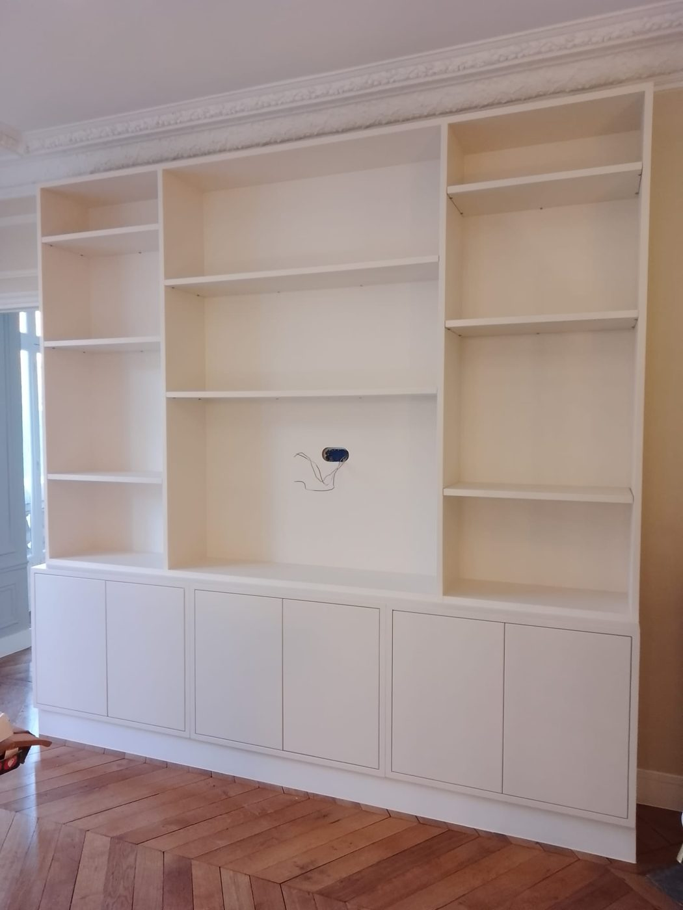
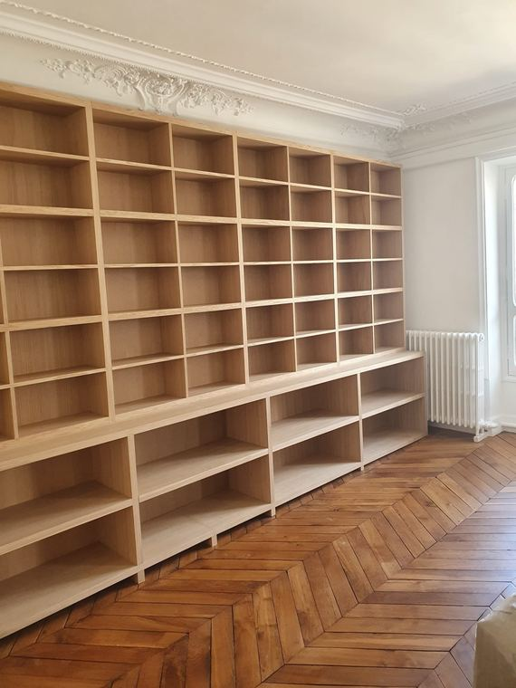
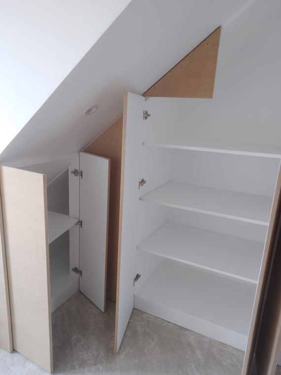

Prestations / Agencement sur mesure
Agencement sur mesure
Conçus pour la pièce, fabriqués à l'atelier, posés et peints par la même équipe.

Ce que nous réalisons
Bibliothèques, dressings, meubles
Le meuble dessiné pour la pièce
- Bibliothèques toute hauteur, avec ou sans portes, intégrées aux moulures et aux corniches existantes.
- Dressings et placards, portes battantes ou coulissantes, aménagement intérieur sur mesure.
- Meubles sous pente et sous escalier, la configuration où le sur mesure est le plus rentable parce qu'aucun meuble du commerce n'y entre.
- Meubles TV, bureaux intégrés, bancs de rangement, têtes de lit.
- Habillages de radiateur, soubassements, lambris et corniches.


Notre différence
Fabrication, pose et peinture
La finition peinture est comprise
C'est la différence avec un menuisier classique. La plupart livrent un meuble brut ou pré-peint en atelier, et le raccord avec le mur est fait par quelqu'un d'autre, plus tard, souvent mal.
Nous fabriquons, nous posons, nous rebouchons les jeux contre le mur et nous peignons dans la teinte de la pièce ou dans celle que vous voulez. Le meuble a l'air d'avoir toujours été là. Sur du bâti ancien où aucun mur n'est d'aplomb, c'est ce raccord qui fait toute la différence.
Choisir
Sur mesure, semi-mesure, matériaux
Sur mesure ou semi-mesure
Le semi-mesure, ce sont des caissons standards adaptés à vos dimensions. C'est moins cher et cela convient à un placard de chambre dans une pièce aux murs droits.
Le sur mesure se justifie dès qu'il y a une contrainte : sous pente, sous escalier, mur non d'aplomb, moulures à contourner, hauteur sous plafond importante, ou simplement une exigence de finition que le semi-mesure ne peut pas atteindre. À partir de deux à trois mètres linéaires, l'écart de prix se réduit et le sur mesure devient souvent le meilleur choix.
- MDF laquéLa solution la plus courante. Surface parfaitement lisse après peinture, coût maîtrisé, adapté à toutes les teintes.
- ContreplaquéPlus résistant, chant apparent assumé, rendu contemporain.
- Bois massif et placageChêne, frêne, noyer. Pour les projets où le veinage fait partie du dessin. Budget nettement supérieur.
Notre méthode
Relevé sur place au laser, plan coté avec vues et détails, validation avec vous avant fabrication, fabrication à l'atelier, pose, reprise des raccords, finition peinture. Comptez trois à cinq semaines entre la validation du plan et la pose.
Prix indicatifs
Fourchettes 2026, pose et peinture incluses
Combien ça coûte
| Prestation | Prix HT |
|---|---|
| Placard ou dressing, MDF peint | 700 à 1 200 €/ml |
| Bibliothèque toute hauteur, MDF laqué, finition peinte incluse | 1 000 à 1 800 €/ml |
| Chêne massif ou placage bois | 1 800 à 3 000 €/ml |
| Meuble sous pente ou sous escalier | 1 200 à 3 500 € forfait |
| Habillage de radiateur, soubassement, lambris | 350 à 700 €/ml |
Prix incluant conception, fabrication, pose et finition peinture.
Prix indicatifs, hors fourniture lorsque précisé. TVA à 10 % pour les logements achevés depuis plus de deux ans. Chaque chantier fait l'objet d'un devis détaillé après visite technique gratuite.
Questions fréquentes
4 réponses
Questions fréquentes
Travaillez-vous sur les plans d'un architecte ?
Oui. Nous chiffrons et exécutons sur plans fournis, et nous signalons en amont ce qui pose problème à la fabrication ou à la pose plutôt que de le découvrir sur place.
Quel délai entre la commande et la pose ?
Trois à cinq semaines après validation du plan coté, selon la complexité et le matériau.
Le meuble est-il démontable si je déménage ?
Un meuble sur mesure est conçu pour la pièce et se dépose rarement sans dommage. Si la reprise est un critère, dites-le nous : cela change la conception.
Fournissez-vous les poignées et l'éclairage ?
Oui, ou vous les fournissez. Les réglettes LED intégrées et les prises dédiées demandent une intervention électricien, à prévoir en amont.
Voir aussi : peinture · plâtrerie et cloisons · parquet
Passer à l'action
Réponse sous 24 h
Parlons de votre projet
Visite technique gratuite, devis détaillé sous 48 heures, dans l'est parisien et à Paris.